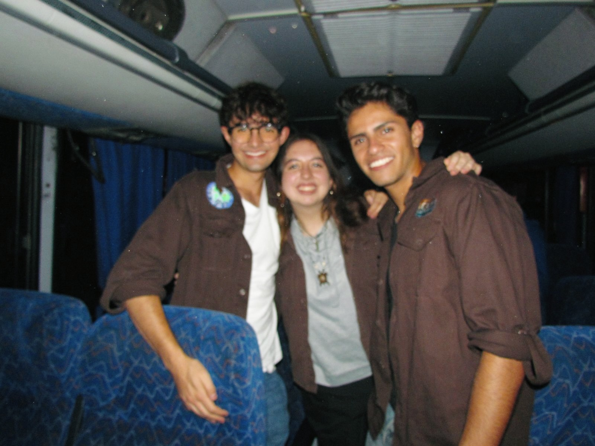

La última etapa del camino scout. La que se hace en torno al fuego, entre iguales que ya saben para qué están aquí. Mixto, autónomo, y al servicio de las demás secciones.

El Clan es la rama mixta del grupo. Reúne a quienes han recorrido todo el sendero scout y siguen aquí porque encontraron algo que vale la pena: una comunidad de iguales que decide su propio rumbo.
Es también la antesala de la jefatura. Muchos de los jefes del grupo hicieron Clan antes de tomar una sección — no porque fuera obligatorio, sino porque el Clan forma justo a quien va a guiar a otros.
El Clan es del Clan y para el Clan.
— Pintado en piedra, transmitido al fuego —
El oso cavernario es el animal totémico del Clan: solitario cuando hace falta, pero poderoso cuando se reúne con los suyos en torno al fuego. La cueva es su territorio común — un lugar de refugio, de transmisión, de decisiones tomadas entre iguales.
El Clan no necesita guía constante. Decide, planea y rinde cuentas a sí mismo.
No hay jerarquías internas. Todos los Rovers entran al fuego con el mismo asiento.
Lo aprendido se devuelve al grupo y a la comunidad — esa es la regla del Clan.
El Clan se reúne entre semana para sus propios proyectos. Ahí planea, conversa, decide y formula. El sábado es de las secciones; entre semana, del Clan.
Salidas propias, distintas a las del resto del grupo. Trekking largo, montañismo, exploraciones, retiros. El Clan camina más lejos y carga su propia mochila.
Los sábados, los Rovers acompañan a Manada, Tropa y Comunidad — apoyando a los jefes, ayudando con actividades, sirviendo donde haga falta.
Una vez cada tres años, el Clan organiza un proyecto de servicio de gran escala — concebido, planeado, financiado y ejecutado enteramente por sus integrantes. No hay supervisión externa: es el examen final de lo aprendido en quince años de escultismo.
Comunidades rurales, intervenciones ecológicas, infraestructura social. El Gran Servicio es la marca que cada generación de Clan deja antes de cerrar la rama.
Si llegas con o sin experiencia scout, hay lugar en torno al fuego. Te esperamos cualquier sábado.
Escríbenos por WhatsApp